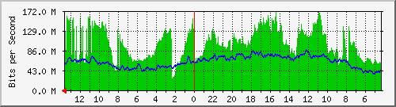
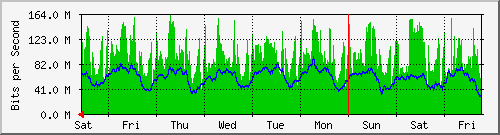
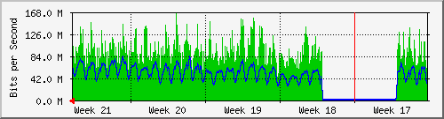
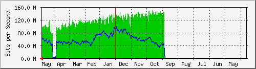

Traffic Analysis for Gi0/1 -- ISPNetland
| System: | ISPNetland in |
| Maintainer: | |
| Description: | GigabitEthernet0/1 IGR-TELMEX |
| ifType: | ethernetCsmacd (6) |
| ifName: | Gi0/1 |
| Max Speed: | 1000.0 MBytes/s |
| Ip: | 192.168.24.234 (No DNS name) |
Estadísticas actualizadas el Sábado 27 de Mai de 2017 a las 13:41,
'ISPNetland' ha estado funcionando durante 405 days, 3:46:07.
Gráfico diario (5 minutos : Promedio)

|
Máx |
Promedio |
Actual |
| Entrante: |
170.6 Mb/s (0.0%) |
102.2 Mb/s (0.0%) |
155.3 Mb/s (0.0%) |
| Saliente: |
86.8 Mb/s (0.0%) |
61.3 Mb/s (0.0%) |
58.9 Mb/s (0.0%) |
Gráfico semanal (30 minutos : Promedio)

|
Máx |
Promedio |
Actual |
| Entrante: |
163.7 Mb/s (0.0%) |
98.2 Mb/s (0.0%) |
143.6 Mb/s (0.0%) |
| Saliente: |
92.8 Mb/s (0.0%) |
58.9 Mb/s (0.0%) |
64.5 Mb/s (0.0%) |
Gráfico mensual (2 horas : Promedio)

|
Máx |
Promedio |
Actual |
| Entrante: |
164.8 Mb/s (0.0%) |
76.2 Mb/s (0.0%) |
123.2 Mb/s (0.0%) |
| Saliente: |
83.1 Mb/s (0.0%) |
41.8 Mb/s (0.0%) |
64.1 Mb/s (0.0%) |
Gráfico anual (1 día : Promedio)

|
Máx |
Promedio |
Actual |
| Entrante: |
149.8 Mb/s (0.0%) |
115.4 Mb/s (0.0%) |
97.1 Mb/s (0.0%) |
| Saliente: |
98.3 Mb/s (0.0%) |
57.6 Mb/s (0.0%) |
56.9 Mb/s (0.0%) |
| VERDE ### |
Tráfico entrante en Bits por segundo |
| AZUL ### |
Tráfico saliente en Bits por segundo |